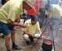
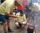

Wichtige Veranstaltungen in
Ungarn im Monat August
August:
WEINWOCHE
- zum 26. Male in Balatonlelle 03. - 12. August 2018
Balatonlelle
Weitgehend musikalisch geprägte
kulturelle Veranstaltung mit Live-Auftritt vieler Rock-, Pop-,
Folkloregruppen und der berühmten Zigeunerkapelle Bihari. Die
Veransstaltung erreicht ihren Höhepunkt am letzten Tag
(Sonntag) mit der Wahl der Weinkönigin. Der Schlußpunkt ist
die kirchliche Messe zu Ehren des Hl. Donatus.
OZORA TRANCE- UND
MUSIKFESTIVAL - jährlich seit 2004,
amtlich: Psychedelic Trance
30. Juli - 05. August 2018 in
Ozora
Ozora Psychedelic Gathering Einmal jährlich seit 2004
trifft sich die Szene rd. 20 km südöstlich vom
Plattensee
am Rande der überwiegend katholisch geprägten Gemeinde Ozora
mit rd. 1.600 Einwohnern. Die wenigen Gästeunterkünfte
in Ozora reichen lange nicht für die Teilnehmer aus, so wird
ein offenes Gelände als Campingplatz, zugleich
Veranstaltungsort bereitgestellt. - Im Jahre 2015 stellte
der Bürgermeister von Ozora einen Strafantrag gegen die
Veranstalter, weil diese seiner Meinung nach einen
schlechten Ruf der Gemeinde zu verantworten haben.
In der Tat werden während der Veranstaltung laufend neue,
auch ausländische Drogenhändler festgenommen. Magisch
dabei ist die Tatsache, dass der Bürgermeister einer
katholisch geprägten Gemeinde auf diese
Veranstaltung nicht verzichten will, obwohl die Basis
für diese Art von Musikszene auf die von Drogen
hervorrufene Trance basiert, die vom Gesetzgeber schon
seit Jahrzehnten durch Drogenverbot ins kriminelle
Milieu geschoben wurde.... Lesen Sie mehr über
Psychedelic Trance
hier
Das folgende Video vermittelt einen
kurzen Einblick aus dem Alltagsleben der Gäste während
der Veranstaltung:
BALATON-BIKERFEST fällt
2017 aus 01.-02. August 2016 in Balatonfüred und Tihany
Balaton Bikerfest
Trotz reger Teilnahme im Jahre 2016 fällt die
Veranstaltung 2017 aus. Die Veranstalter hoffen auf mehr
Sponsorenunterstützung für die Wiederbelebung der
Veranstaltung im Jahre 2018. -
Man kann sich zu familienfreundlichen 20 und 40 oder zu
einer 105 km langen Rennstrecke anmelden, die innnerhalb
von 5 Stunden zu bewältigen sind. Die Vergabe der
Startnummern beginnt schon am Vortag. Der Start
ist um 10 Uhr und die Preisvergabe beginnt um 15 Uhr.
WEINTAGE
IN ÁBRAHÁMHEGY
- zum 6. Male
02.-06. August 2017 in
Ábrahámhegy/Weinbaugebiet Badacsony
Ábrahámhegy
In Ábrahámhegy, im berühmten Weinbaugebiet Badacsony steht der
Weinbau im Mittelpunkt und der Bürgermeister steht hinter den
Weinbauern, freut sich auf eine nach seiner Meinung sportliche
Siedlung, wo auch noch nach Mitternacht der Wein aus dem
letzten Jahr bejubelt wird, auch wenn die Erholung suchenden
Gäste davon nicht besonders begeistert sind.
Zalai Borcégér-Keszthelyi Borünnep
- Zalaer Weinguilde und
Weinfest
in Keszthely - seit 1992
02.-06. August 2017 in Keszthely
Nach diversen Umbenennungen wird
diese Veranstaltung im Jahre 2017 erneut als "Zalai
Borcégér-Keszthelyi Borünnep" bezeichnet, wie schon früher.
Ein bischen doppelt gemoppelt ist dabei der Wein, aber darauf
kommt es an in diesem Weinbaugebiet. Wichtig ist dabei, dass
diese Veranstaltung, eine der wenigen in Keszthely, erneut
rechtzeitig angekündigt wurde für die anreisenden Touristen,
darunter viele Ausländer, die Keszthely mögen und viele Jahre
lang ihre Anreisetermine nicht nach dieser Veranstaltung
richten konnten.
Weinverkostung,
Handwerkermarkt, kulinarische
Speisen, Kinderprogramme, Tanz- und Musikdarbietungen, Konzerte stehen im
Mittelpunkt der Veranstaltung. Im
Schatten großer Platanen am Balatonufer bieten 15
Weinkeller aus dieser Gegend im
Weinbaugebiet
Zala ihre Produkte an.
Für Weinfreunde in anderen Jahreszeiten empfehlen wir
weiterhin die Gastronomie im
Hotel Bacchus mit bodenständigem
Personal und einem Weinmuseum.
WARNUNG 1 FÜR AUTOFAHRER -
gilt in ganz Ungarn:
In Ungarn gilt NULL Promille ohne Toleranz.
WARNUNG 2 FÜR AUSWÄRTIGE
AUTOFAHRER - gilt in Keszthely/unsere Erfahrung:
Fall 1:
Im Juli 2004 organisierten wir aus Hamburg eine Gruppenreise mit Bus um
den Plattensee herum. Beim Schlossbesuch parkten wir unseren
Reisebus dorthin, wo vor dem Schlossgarten zwei Busparkplätze
dafür markiert sind. Zusammen mit dem Busfahrer nahm
ich nicht Teil am Schlossbesuch. Meine Zeit musste ich
für die Beschaffung von genügend Forintmünzen
für den Parkautomaten opfern und laufend
nachfüllen, weil ein Schloßbesuch deutlich länger dauert, als der
Parkscheinautomat die Dauer des Schloßbesuches vorsieht. Als ich mit dem Busfahrer
zusammen 5 Meter entfernt vom Bus auf der anderen Strassenseite den
Parkautomaten bediente und wir uns danach umdrehten, da steckte schon
der
Strafzettel an der Windschutzscheibe. Die Strasse war total
menschenleer - der/die Stadtangestellte muss also ziemlich hinterlistig
gehandelt haben.
Die Organisatoren wissen genau, dass unsere Zeit nicht dafür
ausreicht, am
Wochenende irgendjemanden in der Stadtverwaltung ausfindig zu machen,
wo wir uns hätten beschweren können und Ausländer tun das sowieso kaum. Es gibt keine
Entschuldigung dafür, dass wir gut 5 Monate später
den Strafzettel über 50,- Euro in Hamburg per Einschreiben aus Keszthely erhielten.
Das ist eine schöne Einnahmequelle für die Ratsherren von
Keszthely - wohlorganisiert, ohne Wenn und Aber. Ob Abzocke oder
Ausländerfeindlichkeit, in den Köpfen der
Stadtverwaltung von Keszthely steckt, uns ist das gleich. Da die Parkautomaten nur da
aufgestellt sind, wo Ausländer parken, ist die Masche deutlich
genug.
Fall 2:
Am 23. Juni 2012 parkte ich vor einem der Häuser des Abbazia
Clubhotels. Da steht natürlich ein Parkticketautomat direkt
vor dem
Haus, wo Touristen den nächsten Parkplatz finden. 20-30 Meter weiter ist
das Parken frei. Durch
jahrelange Erfahrung wusste ich bescheid, dass wir mit dem
ausländischen Nummernschild von
einer Stadtangestellten in Zivil beobachtet werden, wusste nur
nicht, wer das ist, weil mehrere Leute herumlungerten. Als ich auf
Ungarisch laut schrie: "Wetten
wir, dass ein Stadtangestellter uns jetzt beobachtet und darauf wartet,
wann wir ihn nicht sehen und er uns einen Strafzettel verpassen kann?"
Da meldete sich eine Dame aus dieser Gruppe der Herumstehenden und
entschuldigte sich,
dass "sie eine Anweisung
habe, so viele Strafzettel wie möglich zu verteilen". Nur wenige Schritte
daneben parkten einige Autos mit ungarischen Kennzeichen - ohne
Strafzettel und ohne sichtbaren Parkausweis.
Vermerk:
In Keszthely ist man noch
immer stolz
auf die Aktivitäten der schulbildungslosen 1919er
Räterepublik-Terroristin und
sowjetkommunistische Untergrundkämpferin Kato Haman und
huldigt sie weiterhin mit der Namensgebung eines öffentlichen Platzes in der
Stadt für ihren Lobgesang an die Ermordung von unzähligen
Ungarn, von denen die Söhne Lenins 133 Tage lang fleißig in
die eigene Taschen und auf ihre eigenen Schweizer Konten
kollektierten. - Das dürfte alles erklären
über die politische Einstellung der Stadtverwaltung im Jahre 2014,
rd. 25 Jahre nach der sog. politischen Wende, die in Ungarn in
der öffentlichen Verwaltung nirgendwo stattfand. Nach den
Wahlen im Mai 2014 gab der aus dem Parlament ausgewählte
Abgeordneter Sándor Csintalan (ein Geschichtslehrer)
enttäuscht bekannt: "Noch immer sitzen im ungarischen
Parlament in überwiegender Mehrheit die Söhne und Enkelkinder
der Henker der Räterepublik von 1919...."
Der Fisch stinkt bekanntlich vom Kopfe und im Herbst 2014
belegten die USA einige politisch Verantwortliche in Ungarn
mit Einreiseverbot wegen Korruption. Wenn Viktor Orbán nun
schon seit seiner Machtergreifung im Jahre 2010 seinen
Nachbarn des Öfteren EU-Gelder in dreistelliger
Euromillionenhöhe für verschiedene Zecke auf dem Boden seiner
Ehefrau "gewinnen läßt" bzw. ihm zuteilt und über 300 Hektar
Staatseigentum seiner Frau hinzu buttert, dann spricht das
Bänder. Dabei steht das aus EU-Geldern finanzierte neue
Fußballstadion in seiner Heimatgemeinde (von wo viele
Donauschwaben ohne Entschädigung vertrieben wurden) auf seinem
eigenen Grundstück und auch dafür kassiert der Eigentümer
Pachtgebühren. Ende 2014 lehnte das ungarische Parlament die
amerikanischen Korruptionsvorwürfe mit einer
Mehrheitsentscheidung ab, basierend auf die rechtskonservative
Unterstützung der Partei Fidesz des sportbegeisterten Viktor
Orbáns. Ende September 2017 beabsichtigt eine von Soros
unterstützte EU-Parlamentskommission die Besichtigung seiner
Habseligkeiten direkt vor Ort - womöglich zwecks
Einschüchterung in Sachen Moslemeinshleusung nach Ungarn -
warum denn ausgerechnet jetzt, wenn das jahrzehntelange Wirtschaftsgebaren in die eigene
Tasche der Abgeordneten aller machthabenden Parteien in Brüssel
schon lange bekannt ist? - Als wären die Habseligkeiten seines
sozialistischen Vorgängers (Ferenc Gyurcsány) und dessen Frau
nicht mindestens genauso interessant (die früher staatliche
Aluminiumindustrie u.a.) - oder die von seinem Finanzminister
heruntergewirtschaftete staatliche Fluglinie Malév (wird
wahrscheinlich Mitte September 2017 endgültig aufgelöst), an
dessen Stelle heute seine private Fluglinie WizzAir fungiert. Soviel über das von wo der Fisch...
Fazit: Die behördlich
organisierte Abzocke
wird im Rathaus von Keszthely
organisiert mindestens 15
Jahre schon, seit wir mit Reisebussen in diese Gegend fahren. Sogar das
Clubhotel Abbazia macht mit, indem zwar auf eingezauntem, aber
auf holpriger und unbewachter Schotterfläche im Freien
Parkgebühren verlangt, wie bewachte Parkhäuser in Großstädten. Bald
machen wir einen Bogen um Keszthely. Ausländische Autofahrer
macht die Augen auf und
macht ebenso einen
großen Bogen um Keszthely herum. Abgesehen vom Schloss Festetics und
presigünstiger Unterkünfte in der Nähe von Bad Hévíz ist da
wenig zu sehen - und das ist schon alles, was die Stadt überhaupt anzubieten vermag, weil
die Wendehälse im Rathaus die unrechtmäßig
beschlagnahmten Güter
nach der sog. politischen Wende in die eigenen Taschen
scheffelten und nicht den rechtmäßigen
Eigentümern
zurückgegeben hatten. Ein Paradebeispiel dafür ist gerade das Schloss Festetics in
Keszthely.
Eine silberne Zitrone wäre zu wertvoll, wir fordern daher die:
Eiserne
Mülltonne an die Stadtverwaltung Keszthely -
wegen Abzocke ausländischer Autofahrer !
DEBRECZINER
WEIN- UND JAZZTAGE - jährlich seit 1971
02.-05. August 2018 in
Debrecen Für die
Unterhaltung auf der großen Freilichtbühne im berühmten
Debrecziner Nagyerdő (Großer Wald)
sorgten zuletzt zwei einheimische
Jazzkapellen. Zwischendurch wurden zur Belustigung der
Zuschauer musikalische Volkstraditionen vorgeführt. Die
örtliche Gastronomie sorgt für das Wohlbefinden der Gäste, wie
das folgende Kurzvideo zeigt:
DIXILAND
TAGE IN SZOBOSZLÓ 03.-05. 2018 - jährlich seit
1996 in
Hajdúszoboszló
Diese
Show bietet den
Dixieland-Anhängern unvergessliche Erlebnisse.
Während der dreitägigen
Veranstaltung geben bekannte ungarische und internationale Gruppen
Konzerte.
BAROCKE
SCHLOSSTAGE im kgl. Schloss
Konzert der örtl. Symphonieorchester 06.-07. August 2017 in
Gödöllõ
Barocke Schlosstage
Die
Veranstaltung wurde im Jahre 1751 von Kaiserin Maria Teresia
bei ihrem Besuch im bei uns als Sissi Schloß bekannten Gebäude
höchstpersönlich ins Leben gerufen.
Die
Besucher werden durch das historische Markttreiben,
die Gaukler, Reitervorführungen, Konzerte und Tanzspiele in
das
Zeitalter des Barock zurückversetzt.
TSCHANGO FESTIVAL - Csángó Fesztivál - seit 1990
07.-12. August 2018 in Jászberény
(ca. 80 km östlich von Budapest) Csangofesztival
Bereits Anfang August beginnt ein Zeltlager für die
Tanzgruppen, hier können auch andere Volkstanzgruppen
teilnehmen - rechtzeitige Anmeldung ist erforderlich.
Csángó ist eine geografisch zersplitterte ungarische
Volksgruppe, die trotz EU - im EU-Land Rumänien (!) -
auch heute sporadisch unterschiedlich, jedoch
fortlaufend unter starkem, fremden Diktat leidet,
weniger hart im nicht EU-Land Moldavien. Die Tschangos stellen sich
alljährlich in ihrer ungarischen Partnerstadt Jászberény
vor. Musikalisch-tänzerische Folkloredarbietungen und
Theaterauftritte zeigen Tradition und Lebensweise in
fremden Ländern. Sie kommen aus Transsylvanien bzw. Erdély,
Gyimes (Grenzgebiet beiderseits der rumänisch
moldauischen Grenze) und aus anderen Gegenden von
Moldavien.
INSELFESTIVAL SZIGET -
08.-15.
August 2018 auf
der Donau-Werftiinsel Óbuda in Budapest -
jährlich seit 1993 Sziget
Festival
Es
dauert eine Woche lang und erfreut sich wachsender
Beliebtheit. Gut zu wissen: Der 20. August ist der
wichtigste Nationalfeiertag in
Ungarn und wird u.a.
mit einer mehrstündiger Wasserparade gefeiert. Dies
erfordert eine lange Vorbereitung an der Donau, wovon auch die Umgebung
der 180 Hektar großen Insel betroffen ist.
Es ist das
größte Festival seiner Art in Mitteleuropa. 2002
waren 300.000
Inselschwärmer gekommen, 2003 etwa 350.000
und im Jahre 2012 nahezu 450.000. Das
größte Musikfestival Europas mit über 250
international bekannten
Bands, viele aus Übersee, Vertreter aller Musiksparten und
Altersklassen, auf 5 Haupt- und 10 Nebenbühnen, ferner
zahlreichen
kleinen Schauplätzen auf der verkehrsfreien Insel bietet eine
ganze Woche lang Musik von Klassik bis Heavy
Metal,
Party, Fun und viele weitere Highlights, wie Straßentheater und
Zirkus, Bewegungstheater und Ausstellungen. Das Sziget-Festival ist der
Ort, an dem große Freundschaften geschlossen werden und
manche Liebe entsteht.
AUF
DEN SPUREN DER KÖNIGLICHEN KÖCHE
Ein
Kochwettbewerb Anfang August in Nagyszakácsi, ca. 15 km
südwestlich vom Plattensee.
Die
Veranstaltung ist weitgehend von Spenden abhängig und
fällt gelegentlich aus. Im Jahre 2012 gab es die bisher meisten Besucher,
wurde jedoch 2013 vorläufig
eingestellt,
so sind wir nun gespannt, wann der nächste Wettbewerb
stattfindet und ob überhaupt, wie versprochen von der örtlichen Obrigkeit.
Im
15. Jahrhundert haben mehrere Könige, darunter Kaiser
und ungarischer König Siegmund, Matthias u.a. ihre besten
Köche geadelt und ihnen hier Ländereien geschenkt.
Heute
bereiten ihre Nachkommen nach Originalrezepten die Gerichte zu, die in
zeitgenössischer Kleidung und bei Renaissance-Musik serviert
werden.
Gekocht wird aus Naturprodukten, die schon im 15. Jahrhundert in den
königlichen Küchen verwendet wurden. Zudem findet ein
mittelalterlicher Markt statt.
TAG
DER AHNEN - seit 2008 11.-13.
August 2017 in Bugac-Pußta Kurultaj
Eine neue Veranstaltung seit
2008. - Die Erforschung, Darstellung, Wiederbelebung und Pflege altungarischer
Traditionen aus den Zeiten vor der letzten Landnahme vor rd. Tausend Jahren steht
im Mittelpunkt einer neuen 3-tägigen Wochenendveranstaltung,
die bereits mehrere halbamtliche Jahresversammlungen hinter sich
brachte. Es sind ungarische Wissenschaftler, im
türkisch-turkmenisch-kasachischen Raum forschende
Anthropologen, die ihre dort gewonnenen Kenntnisse ins Bewusstsein der
Ungarn einprägen und erneut zur ungarischen Sitte machen
wollen. Vergessen und auch ignoriert wird dabei die Tatsache, dass die
Ungarn auf verschiedenen Wegen ins Karpatenbecken vordrangen. Vertreter
des südlichen Weges über vorderasiatische Gebiete
sind wenig zimperlich und lehnen alle anderen Erkenntnisse ab, sie
werben in der Bugacpußta für ihre Vorstellung über Steppenleben mit Pfeil
und Bogen - und in der Tat, genetische Untersuchungen haben
die Verwandschaft der Ungarn zu den heute in Kasachstan
lebenden "Madjar" Stammes bewiesen. Einst haben die Vorfahren
der Madjaren Islam ebenso zwangsweise angenommen, wie die
Magyaren in Ungarn die christliche Religion.
ZEMPLÉN
FESTIVAL - jährlich seit 1991 10.-19. August 2018
in Sárospatak, Sátoraljaújhely, Szerencs, Tokaj u.a.
Zemplenfestival Die
größte
kulturell-touristisch-gastronomische Veranstaltungsreihe der Region
bietet interessante Programme für jede Altersgruppe. Die
Gäste können aus einem umfangreichen Angebot an
Theateraufführungen, Konzerten der klassischen, leichten und Jazzmusik sowie
Ausflugskonzerten auswählen. Ergänzt wird die
Veranstaltung durch gastronomische Programme, bei denen die
typischen Speisen der Gegend und die berühmten Tokajer Weine
vorgestellt werden.
Übrigens: Zemplén ist der Name eines der 16
ungarischen
Komitats im Nordosten des Landes - juristisch den deutschen Bundesländern
entsprechend. Es ist ein Zufall, wenn in Deutschland ebenfalls
16 davon gibt. Die ungarischen Komitate wurden
einst nach den Volksstämmen benannt, die bei der Landnahme
dort ansiedelten, irgendwie vergleichbar mit Deutschland.
WELTTREFFEN DER KUVASZ UND KUVASZHALTER 12.-15. August 2016 im Gasthaus
"Ökotúra Vendégház és Kemping" H-4071 Hortobágy,
Borsós 12
Magyar Kuvasz
Es
war das erste Welttreffen von Kuvaszfreunden und viele
kamen aus dem Ausland.
Wann und ob die Veranstaltung erneut stattfindet, ist noch
unklar.
SUMMERFEST - INTERNATIONALES FOLKLOREFESTIVAL -
jährlich seit 1993 12.-22.
August 2018 in Százhalombatta, Ráckeve und Tököl
Summerfest
Am Tanzwettbewerb in Százhalombatta
nehmen viele Folkloreensembles aus aller Welt teil und ein
Markt mit Folklorekunstprodukten gehört ebenso zur
Veranstaltung, die wächst und wächst und schwappt über die
Stadtgrenzen hinaus in der Umgebung weiter.
Theatervorführungen, Puppentheater, eine Skulpturenausstellung
und ein Wasserkarneval und noch viel mehr befinden sich im Programm.
Der Auftritt einer Volkstanzgruppe aus Kroatien im Jahre 2015
in Tököl:
WEINWOCHEN IN
BALATONFÜRED -
jährlich seit 1932
13. August - 03. September 2017 in Balatonfüred
Balatonfüred
Gewöhnlich 3 Wochen lang von Anfang August, dieses
Jahr jedoch wegen der FINA-Weltmeisterschaften eine
Woche später beginnen die Weinwochen am
Tagore-Uferpromenade.
Die Weingärtner desWeinbaugebietes
Balatonfüred-Csopak
erwarten die Gäste in ihren stimmungsvollen Weinzelten
und feiern 3 Wochen lang mit. Aber Balatonfüred ist nicht nur ein
Weinbauort. Die Veranstaltungsreihe bietet jeden Abend
ein reiches Kultur- und Folklore-Programm. Tagsüber
erwartet ein Volkskunstmarkt seine Besucher.
Direkt gegenüber dem Schloß findet
ein Kochwettbewerb statt. Die Aufgabe der Teilnehmer ist die
Herstellung einer charakteristischen Speise des Barockalters,
aus den von den Organisatoren gewählten Fleischsorten und
Vorstellung der Geschmackswelt sowie der Koch- und
Backmöglichkeiten dieser Zeit.
(Kessel, Spieß, Scheibe, Ofen )
ZAUBER DES BAROCK BAROCKHOCHZEIT
jedes Jahr Mitte August ein Wochenende
in Gyõr
Bei der Barockhochzeit
wird die Hochzeitszeremonie eines jungen adligen Paares aus
dem 17. Jahrhundert dargestellt. Am spektakulären barocken
Geschicklichkeitsturnier nehmen gut trainierte Mannschaften in
zeitgetreuen Kostümen teil und erinnern an die herausragenden
historischen Momente der Stadt Gyõr. Tausende Zuschauer werden
Zeugen dieser prunkvollen Zeremonie. Blumengeschmückte
Kutschen fahren durch die von Musik erfüllten Straßen der
Innenstadt. Die Besucher können auch die prächtigen Gewänder
der Hochzeitsteilnehmer bestaunen.
FESTIVAL
DER ALTEN WARTSIEDLUNGEN (ÕRSÉG) alljährlich
Mitte August
in Õriszentpéter
In
zehn Tagen präsentiert
die Lanschaft Õrség ihre eimalig
typische
Wartdörfer. Beim
diesjährigen Festival finden erstmals einige
Höhepunkte im
Dreiländereck Österreich-Ungarn-Slowenien
grenzüberschreitend statt.
SUMMERFEST
INTERNATIONALES
FOLKLOREFESTIVAL - seit 1992
12.-22. August 2018 in Százhalombatta, Ráckeve,
Tököl, Budapest und Umgebung Summerfestbatta
Tanzensembles aus anderen Ländern und
Kontinenten stellen ihre traditionellen
Tänze
vor. Auf dem 10-Tages-Programm stehen Volkskunstmarkt,
Theatervorstellungen,
Tanzhaus, Skulpturenausstellung und Wasserkarneval.
Geheimnisse,
tausend
Jahre alte Kulturen und wunderbare Begegnungen erwarten hier die
Besucher. Im Laufe der vergangenen 16 Jahre wurde das "Summerfest" zu
einer der größten Folkloreveranstaltungen Ungarns.
Neben den
Veranstaltungen des Festivals wird das Angebot mit Konzerten der
klassischen Musik, Spielhäusern und Programmen für
Kinder
sowie mit Zeltkonzerten der Weltmusik,
Freilichttheateraufführungen und internationalen
Tanzhäusern
bereichert.
HAJDÚ
WOCHE alljährlich
Mitte August
in Hajdúböszörmény
Die
an mehreren Stellen der
Stadt organisierten Programme enthalten Sport, Kochwettbewerbe,
Unterhaltung und Tanz. Konzerte, Kunstpräsentationen und
Sportaufführungen ergänzen die farbenfrohe Palette.
WEINMESSE AUF DEM ERLAUER MARKT -
seit 2002 alljährlich
ein Wochenende Mitte August in
Eger Von
vielfältigen
kulturellen Programmen
umrahmt stellen die Winzer von Nordost-Ungarn ihre Weine auf dem
Dobó
Platz
vor.
DEBRECZINER
BLUMENKARNEVAL - jährlich seit 1968 13.-20. August 2017 in Debrecen
Blumenkarneval
Eine Woche Fiesta unter Mitwirkung von Weltstars
und ungarischen Künstlern. Eine Woche im Zeichen der Blumen,
Spektakel und außergewöhnlichen Produktionen.Dutzende
von Wagen, geschmückt mit wunderschönen
Blumenkompositionen bahnen
sich durch die Stadt. Das Programm der Tage
vor dem
20. August beinhaltet Folklore-Veranstaltungen,
Straßentheater-Aufführungen, eine Fotoausstellung,
Bierkarneval, Musik und alles ist natürlich den
Blumen
gewidmet.
Am Stefanstag bieten Künstlergruppen ein Programm im Stadion.
INTERNATIONALES
VOLKSTANZFESTIVAL "Königliche Tage" 11.-15. August 2018
in Székesfehérvár - jährlich seit 1996
kiralyi napok
In
Székesfehérvár (dt. Stuhlweißenburg) wurden die ersten
ungarischen
Könige gekrönt und da ist auch der erste von ihnen,
der Hl.
Stefan beerdigt. Das Motto
der Festivaltage ist Feiern in diesem Sinne.
Das
internationale Folklorefestival bietet Freilichtvorführungen
von Straße-, Film- und Tanzmusik. Kinderprogramme und
internationale Volksabende runden das Programm bei kräftiger
Unterstützung der heimischen Gastronomie ab. Das Zentrum der
Veranstaltungsreihe ist das Tanzhaus in der Malomstraße in der
Stadtmitte. Was auf die Besucher wartet, davon wird einiges im
folgenden Video gezeigt:
INTERNATIONALES FOLKLOREFESTIVAL
- seit 1981 eine Woche
Mitte August in Sárvár
„Wir
bauen Brücken von Mensch
zu Mensch und von Volk zu Volk” lautet das Motto
des Festivals. Hier treten ungarische Künstlergruppen
und
Ensembles von jenseits der Grenze sowie Gruppen aus Europa und fernen
Ländern auf.
WEINDORF
eine
Woche Mitte August in Budapest
Weinprobe,
Konzerte, Kinderprogramme und Weinleseumzug an diversen Stellen der
Hauptstadt erwarten die
Gäste. Zu den Veranstaltern zählen mehr als
200
Weinkellereien.
FEST
DER LEBENDIGEN HANDWERKSKUNST
17.-20. August 2017 in
Budapest
Mestersegek Ünnepe
Bei
den vier Wochen lang dauernden Workshops in der kgl. Burg von Buda
präsentieren die besten
ungarischen
Kunsthandwerker die Handgriffe und Techniken ihres Handwerks. Sie lassen auch das Publikum am Schaffensprozess
teilhaben. Bunt wird es an den Festtagen mit musikalischen
Darbietungen. Auf den Bühnen treten ungarische und
ausländische Sänger, Tänzer und Musikgruppen
auf, denen die Pflege der Traditionen am Herzen liegt.
Der
Schlußtag am 20. August ist ein Nationalfeiertag
(Stefanstag) in Erinnerung an
den Hl. Stefan, das erste gekrönte Oberhaupt der
Ungarn.
Am Stefanstag wird traditionell mit dem ersten Schnitt die Brotweihe
gefeiert.
WEINLESEFEST 17.-20. August 2017 in Balatonboglár
Weinlesefest
Für
keinen Wein macht man soviel Werbung in Ungarn, wie für die
Marke BB.
Dahinter
steckt die größte Weinkellerei am Südufer
des Balatons. Wer kennt in
Deutschland noch nicht den
kräftigen Roten vom Balaton?
Die
Werbung ist auch notwendig,
denn südlich vom Balaton erstreckt sich eine klimatisch
zwar besonders
besonnene Weinregion, wo man seit Menschengedenken nur Massenweinsorten
kannte, aber die Böden ergeben nur so viel, was gerade ideal ist für den Sekt. BB ist heute eine der beliebtesten
Sektkellereien in Ungarn. Mit viel Mühe und Können in den letzten Jahrzehnten
schafften die Winzer dieser Region sogar einen
Qualitätssprung, die sie in die Riege der besten des Landes
katapultierte: Bewunderswert ist auch der jahreszeitlich
ungewöhnlich früh angesetzte Termin für die Weinlesetage.
INTERNATIONALER
MOTORRAD- UND STREETFIGHTER WETTBEWERB - viermal dieses Jahr 14. April 2018 in Kunmadaras
/ Dragchallange 29. April - 1. Mai 2018 in Kunmadaras
/ Hotrod zum 1. Mai 02. Juni 2018 in Kunmadaras
/ Beschleunigungsrennen 25.-26.
August 2018 in Kunmadaras / Adrenalin Extrem http://www.kunmadarasmotorsport.hu
Diese
Veranstaltung ist die bekannteste und durch den Ungarischen
Motorverband (MAMS) anerkannte Drag-Europameisterschaft Ungarns und
dieser Region. Zehntausende Pferdestärken versammeln
sich zum Start. Ziel ist es, die exakt 402,33 Meter
lange Strecke so schnell wie möglich zu bewältigen.
Während eines jeden Wettbewerbs treten ausländische Weltstars
mit kuriosen Maschinen auf.
Adrenalin Dragbike
Europameisterschaft und Sovereign FIA Dragster
Autorennen. Europas
schnellste Motoren heulen immer wieder in Kunmadaras auf. Dann
kommen begeisterte Motorsportler mit ihren 1200-PS-Maschinen und
8000-PS-Fahrzeugen aus allen europäischen Ländern zum
Riesenwettkampf nach Ungarn. Neben der Beschleunigung fantastischer Motoren und
Autos bewundern Einheimische und Touristen auch die besten
Motorrad-Stuntmen.
BRÜCKEMARKT
IN HORTOBÁGY - hídi vásár Jedes Jahr am 20.
August und weiteren 2-3 Tagen vor oder danach, je nach dem, welches Wochenende
näher ist
Brückenmarkt in Hortobágy
Ursprünglich ein
Nutzviehmarkt seit Jahrhunderten. Des Pudels
Kern dieser Veranstaltung bilden heute 16 einheimische Händler, die
ihre für Touristen interessante Waren jährlich vom 1. April
bis 1. November anbieten. Zum Namenstag Georg (23. April)
nächsten liegenden Samstag gibt es an der Brücke einen Bio-
und Handwerkermarkt.
Den
Viehmarkt im August gibt es schon seit einigen Jahrhunderten. Hier werden
die
Besucher mit Straßentheater- und
Folklore-Aufführungen,
Tanzvorführungen und Stelzenläufern
unterhalten. Alles geschieht auf oder in der Nähe der
berühmten Pusztabrücke mit den 9
Löchern zwischen ihren Pfeilern. Sie ist die längste
Steinmauerbrücke in Europa.
Am 20. August begeht
man mit dem Erntedank-Umzug und der Brotweihe das Fest des Heiligen
Stephans zu Ehren des ersten Königs
der
Ungarn an seinem Namenstag, der bei den Katholikern zugleich der Geburtstag
sein sollte.Die
Feierlichkeiten beginnen bereits in den Vormittagstunden an der Donau
vor dem
Parlamentsgebäude mit einer Wasser-Luftparade und enden erst
in den
späten
Abendstunden mit dem großen Feuerwerk an der Donau.
Am besten
kann man sie
vielleicht vom
Burgberg aus sehen, man sollte aber rechtzeitig dort sein, um einen
guten Platz
zu bekommen. Auf der anderen Donauseite in Pest sollte man einen Platz
zwischen
Elisabethbrücke und Kettenbrücke ergattern.
Für Singles und einzelne
Paare
empfehlen wir den Vigadó tér Platz unweit von der
Kettenbrücke. Der
Blick von hier ist ähnlich, wie am Bild rechts. Die
Budapester, viele Touristen vom Lande und aus dem Ausland befinden sich
auf
den Straßen der Hauptstadt - da findet bestimmt jedermann
etwas für
sich. Von
1948 an bis zur politischen Wende im Jahre 1989 feierte man am 20. August den Tag der
sozialistischen
Verfassung, vor 1948 jedoch seit eh und je den Sankt Stephans Tag - wie
heute.
Vermerk: Die
Rückeroberung der kgl. Burg von Buda erfolgte zwar am 2.
September 1868, aber den Befreiungstag von den Türken feierten
die Ungarn nachdem, was am 20. August 1686 in der Burg
geschah. Warum auch immer, die Bewohner der Logodi Strasse
(Judengasse) am westlichen Hang der Burg erlebten an diesem
Tag ein Holocaust - sie wurden nach türkischem Muster ausnahmslos abgemetzelt, wie
die Bewohner unzähliger Ortschaften während der 150 jährigen
türkischen Besatzungszeit laufend neu in ganz Ungarn erleiden
mussten, wenn die Buchhalter der Türken in der Logodi Strasse
die Besatzungssoldaten zum Rachefeldzug in die ihrer Meinung
nach zahlungsunwillige Gemeinden schickten. Zamárdi,
Balatonederics und Cserépfalu sind nur Beispiele dafür, wo die
Türken die gesamte Bevölkerung vollkommen auslöschten. Sie
haben alles umgebracht, was sich bewegte, auch die Haustiere,
damit sich evtl. versteckt übrlebende nichts zu essen haben.
Viele Jahre lang feierten die Ungarn den 2. September als Tag der
Befreiung. Aber Maria Theresia erkannte die große Gefahr in einem
nationalen Freiheitstag der Magyaren. Damit diese nicht
allzu stolz auf ihre Freiheit werden, erfand die Kaiserin
stattdessen eine magische Geschichte über die Auffindung der
damals schon seit 600 Jahren vermeintlich unversehrt
gebliebenen rechten Hand des Hl. Stefans an einem 20. August,
dem ersten König der Ungarn und die katholische Kirche macht
diese Geschichtsfälschung seitdem mit. Laut Maria Theresia soll der Hl.
Stefan auch am 20. August gestorben sein. Was für ein
Wunder! So genau weiß man das nicht, aber die katholische Kirche macht
seitdem mit. Es werden an diesem Tag landesweite
Prozessionen (Rundgänge) um die katholischen Kirchen des Landes
organisiert. Diese gut präparierte rechte Hand wird heute in
der Basilika von Budapest aufbewahrt und einmal im Jahr in den
Straßen der näheren Umgebung der Basilika vorgeführt. Das Volk
besteht auf diese Veranstaltung dermaßen, dass die
Landesfürsten in der sozialistischen Ära mitmachen mussten.
Sie erfanden zuerst ein relativ spätes Erntedankfest an
diesem Tag mit einer höchstamtlichen Brotweihe. Später erließen die
Kommunisten eine neue Verfassung lt. Sowjetmuster ausgerechnet an diesem Tag,
damit das Volk amtlich den Tag der Sozialistischen Verfassung, aber nach
eigenem Gutdünken was auch immer an diesem arbeitsfreien 20. August feiern konnte, damit
es nicht auf falsche Gedanken kommt.
INTERNATIONALES
FESTIVAL DER ZIMBELSPIELER alljährlich
am 20. August
in Abaújszántó
Während
der ganztägigen Veranstaltung geht es um die Volksmusik und
die
nationale Identität, die nationale Besonderheit in der Musik
sowie die
Musik Europas und der Völker der ganzen Welt.
Gut zu
wissen:
im Auftrag der Unesco begaben sich Musikwissenschaftler auf die Suche
nach Volkslieder. Das ist ein
Maßstab für die kulturelle Entwicklung eines
Volkes. In Deutschland konnten knapp
6.000 Volkslieder, in
Ungarn über 200.000 erfasst werden.
SAVARIA HISTORISCHES KARNEVAL
24.-27.
August 2017 in Szombathely Savariakarneval
Der
Historische Savaria-Karneval ist das größte
historische Festival in Mitteleuropa im Stil der Antike und basiert
auf den
antiken Traditionen der römischen Siedlung Savaria, heute
Szombathely. Es wird an 13 Schauplätzen eine extrem
breite
Palette von mehr als 250 Programmen geboten: vom Kinderprogramm bis zur
Erotik im Mittelalter - so alles Vorstellbare wird vorgeführt,
vom Karnevalstheater
über die antike Kriegsversamlung und das bunte
Marktgetümmel
bis hin zu Welt- und Volksmusik. Hier
ziehen Groß und Klein bekleidet mit Toga und Tunika durch die
Stadt. Neben Bühnenaufführungen wird es auch ein
Karnevalstheater geben, es werden lustige
Straßentheateraufführungen, Feuerspiele und ein
„Sklavenmarkt” veranstaltet. Der Höhepunkt
des Karnevals ist der Fackelzug am Samstagabend.
Kleinhadwerker führen ihre Handwerkskunst vor und bieten dabei
ihre Produkte an. Eine Weinstrasse und einige
mittelalterlich anmutende,
gastronomische Angebote sorgen für das Wohl von Leib und
Seele.
Der
Tanzverein der Bergarbeiter veranstaltet je nach Wetterlage im
Kulturhaus "Puskin Művelődési Ház" oder im Freien einen
Kochwettbewerb um das beste Pörköltgericht, das dotiert wird.
Kochbeginn: 16 Uhr. Während gekocht wird, werden die Gäste mit
Live Music unterhalten. Nach erfolgter Preisverleihung zeigt
der Verein einiges aus seinem Repertoire und auch die Gäste
werden zumt Tanzen aufgefordert. Die Musik endet mit Open End
zur späten Stunde.
FIA TRUCK RACE - Europameisterschaften
26. - 27. August 2017 am
Hungaroring in Mogyoród bei Budapest
FIA Truck Race
Näheres über den Hungaroring und
genauen Zeitplan der Veranstaltung am Hungaroring und
Ticketkauf hier:
Sie
wollen endlich einmal nach Budapest und suchen eine komfortable
Ferienwohnung, Ferienapartment oder Ferienzimmer,
dann
sind
Sie hier richtig. Wir vermieten 1-4-Zimmer Ferienwohnungen an
bis zu 8 Personen.


 



 Sie
wollen endlich einmal nach Budapest und suchen eine komfortable
Ferienwohnung, Ferienapartment oder Ferienzimmer,
Sie
wollen endlich einmal nach Budapest und suchen eine komfortable
Ferienwohnung, Ferienapartment oder Ferienzimmer,